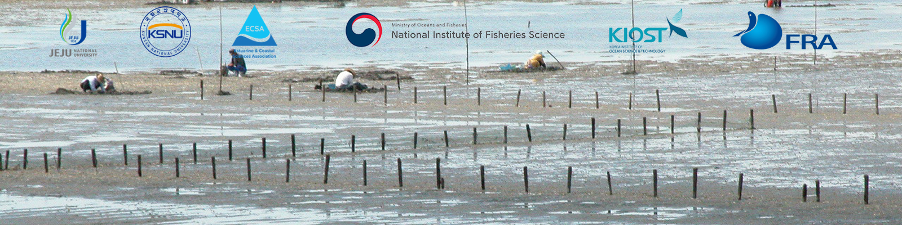
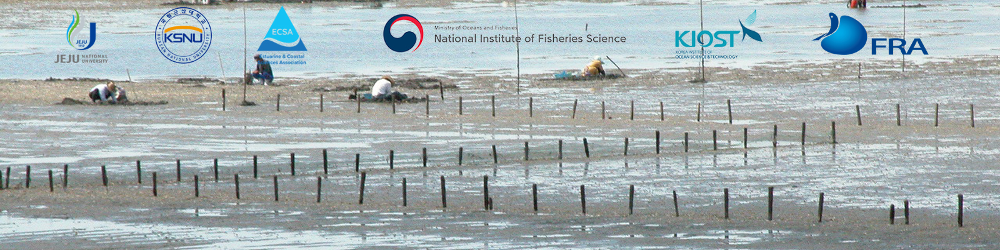

Abstract Submission
Abstracts are being accepted for the 5th International Manila Clam (Asari) Symposium from the scholars and researchers globally working in the field of the latest science and current status of the Manila clam in both its indigenous and non-native areas.
The abstract should be one page and containing maximum of 200 words with six keywords.
Sessions
I. Ecological Dynamics of Manila Clams
II. Genetic Insights in the Manila Clam Fisheries and Aquaculture
III.Strategies for Health Management and Disease Control in Manila Clams
Participants intending to contribute papers should submit their abstracts to the Conference Secretariat (submission.imcs@gmail.com) before 15th of May 2024. Authors should specify whether they prefer oral presentation or poster display in their submission.